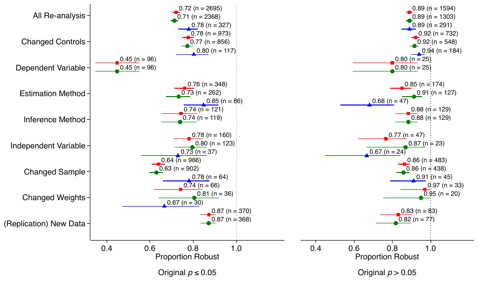

Abstract

Two of this site's authors, Tomas Havranek and Zuzana Irsova, are among the 347. The article was published in Nature in April 2026. The full text on this site is the author's accepted manuscript, which the London School of Economics deposited under a Creative Commons Attribution licence; it is the fullest version of the article that is openly available.
Reference: Abel Brodeur, Derek Mikola, Nikolai Cook, and 344 others (2026), "Reproducibility and robustness of economics and political science research." Nature 652(8108): 151-156. doi.org/10.1038/s41586-026-10251-x
How to cite
Abel Brodeur, Derek Mikola, Nikolai Cook, and 344 others (2026), "Reproducibility and robustness of economics and political science research." Nature 652(8108): 151-156. doi.org/10.1038/s41586-026-10251-x
BibTeX
@article{brodeur2026reproducibility,
author = {Abel Brodeur and Derek Mikola and Nikolai Cook and others},
title = {Reproducibility and robustness of economics and political science research},
journal = {Nature},
volume = {652},
number = {8108},
pages = {151--156},
year = {2026},
doi = {10.1038/s41586-026-10251-x},
}